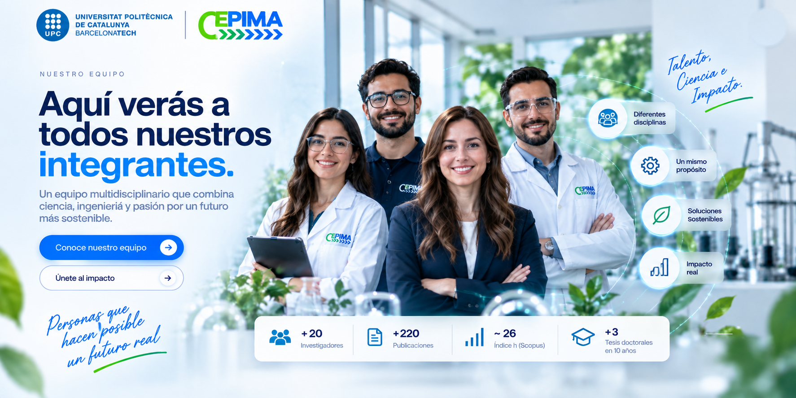

Ingeniería de sistemas de procesos
Modelado, simulación, optimización, integración de procesos y apoyo a la toma de decisiones.
CEPIMA integra ingeniería de procesos e ingeniería ambiental para desarrollar soluciones científicas y tecnológicas aplicadas a procesos industriales más eficientes, sostenibles y circulares.
Transformar retos ambientales y de proceso en soluciones aplicables mediante ciencia, modelado, materiales y tecnologías avanzadas.
Modelado, simulación, optimización, integración de procesos y apoyo a la toma de decisiones.
Fotocatálisis, ozonización, Fenton, membranas y recuperación de agua, nutrientes y metales.
CO₂ y gases fluorados mediante carbones activados, MOFs, polímeros porosos, matrices 3D y líquidos iónicos.
Transformación de corrientes residuales en recursos útiles dentro de modelos industriales circulares.
Las líneas de CEPIMA buscan impacto científico, ambiental e industrial, con potencial de aplicación y escalado.
Herramientas de modelado, integración y optimización para impulsar circularidad industrial.
Adsorción, absorción y simulación para capturar CO₂ de forma selectiva y estudiar su reutilización.
Materiales avanzados y procesos de separación para reducir emisiones de gases con alto potencial climático.
Tecnologías avanzadas para eliminar contaminantes y recuperar agua, nutrientes y metales.
CEPIMA integra ingeniería de procesos e ingeniería ambiental para diseñar soluciones más eficientes, circulares y sostenibles. Esta página explica quiénes somos, cómo pensamos y qué nos mueve.
No se trata solo de investigar: se trata de entender bien el problema, trabajar con método y convertir el conocimiento en valor.
Estudiamos procesos como redes conectadas, no como piezas aisladas.
Modelado, experimentación y análisis sostienen cada decisión científica.
Buscamos resultados que puedan informar, mejorar o transformar sistemas reales.
Caracterizamos el sistema, sus restricciones, sus recursos y sus oportunidades.
Seleccionamos herramientas, hipótesis y criterios de evaluación.
Contrastamos modelos, datos y resultados antes de avanzar.
Traducimos lo aprendido en publicaciones, proyectos y oportunidades de colaboración.
Procesos, agua, gases y valorización de residuos se integran aquí bajo una misma lógica: comprender, modelar, experimentar y optimizar.
La investigación se organiza para que cada línea tenga una identidad técnica clara sin perder la conexión con las demás.
Modelado, simulación, optimización, integración y apoyo a la toma de decisiones.
Fotocatálisis, ozonización, Fenton, membranas y recuperación de recursos.
CO₂ y gases fluorados mediante materiales porosos, adsorción y tecnologías selectivas.
Conversión de corrientes residuales en recursos dentro de esquemas circulares.
Cada proyecto pasa por una secuencia de planteamiento, medición, análisis, contraste y optimización.
Definir qué queremos comprender o mejorar.
Generar evidencia bajo condiciones controladas.
Representar el sistema y explorar escenarios.
Identificar configuraciones de mejor desempeño.
Los proyectos conectan líneas de investigación, herramientas de modelado y tecnologías ambientales con retos concretos de circularidad, emisiones y recuperación de recursos.
Cada proyecto puede combinar varias capacidades del grupo, pero todos buscan llegar a un resultado que pueda ser entendido, evaluado y eventualmente transferido.
Herramientas de integración y optimización para escenarios de economía circular.
Evaluación de tecnologías selectivas y alternativas de aprovechamiento.
Procesos y materiales avanzados para gases de alto impacto climático.
Eliminación de contaminantes y recuperación de recursos en corrientes acuosas.
Un proyecto puede aportar nuevo conocimiento, reducir impactos ambientales y crear mejores herramientas para decisiones industriales. El verdadero valor aparece cuando estas dimensiones se encuentran.
Conocimiento, validaciones, métodos y publicaciones.
Menos emisiones, más recuperación y mejor uso de recursos.
Herramientas con potencial de implementación y escalado.
Las publicaciones son la memoria científica del trabajo de CEPIMA: documentan métodos, resultados, aprendizajes y nuevas preguntas para la comunidad investigadora.
Cada publicación registra un avance, una metodología o un resultado que otros pueden revisar, citar, contrastar y desarrollar.
Datos, mediciones, simulaciones y resultados.
Construir conclusiones sólidas y contrastables.
Estructurar la evidencia para su difusión científica.
Abrir nuevas preguntas, citas y colaboraciones.


En CEPIMA reunimos perfiles científicos, técnicos y académicos que trabajan con una misma dirección: desarrollar soluciones rigurosas, transferibles y sostenibles. Cada integrante aporta experiencia, criterio y una visión colaborativa para hacer avanzar los proyectos desde la investigación hasta su aplicación real.
Trabajamos con método, evidencia y profundidad técnica para que cada decisión esté respaldada por conocimiento sólido.
Ingeniería, investigación y experiencia convergen para abordar problemas complejos desde perspectivas complementarias.
Buscamos que los resultados no se queden en el laboratorio: los orientamos hacia aplicaciones, industria y transformación real.
Impulsamos proyectos capaces de generar valor ambiental, tecnológico y social con una mirada de largo plazo.